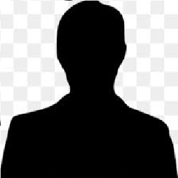

Après avoir eu mon BAC au lycée du Noordover et mon brevet au collège Anne-franck, je me suis dirigé vers une licence de biologie en pensant que cela aller m'intéressé.
Ce fut le contraire puisque 3 mois plus tard je pris la décision d'ârreter cette orientation.
J'ai effectué un petit curcus de 5 mois à l'Ulco Dunkerque qui se nomme DU Tremplin.
Je me suis donc inscrit au pôle emploi, et quelque mois plus tard j'ai découvert la formation DWWM au centre AFCI.
J'ai passé un entretien et j'ai été sélectionné.